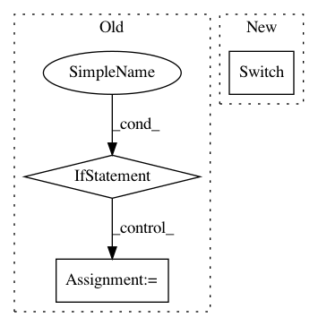

903cda08b153400849409c253cbc8051af53a503,homeassistant/components/switch/insteon_local.py,,setup_platform,#Any#Any#Any#Any#,26
Before Change
insteonhub = hass.data["insteon_local"]
conf_switches = load_json(hass.config.path(INSTEON_LOCAL_SWITCH_CONF))
if conf_switches:
for device_id in conf_switches:
setup_switch(
device_id, conf_switches[device_id], insteonhub, hass,
add_devices)
else:
linked = insteonhub.get_linked()
for device_id in linked:
if linked[device_id]["cat_type"] == "switch"\
and device_id not in conf_switches:
request_configuration(device_id, insteonhub,
linked[device_id]["model_name"] + " " +
linked[device_id]["sku"],
hass, add_devices)
def request_configuration(
device_id, insteonhub, model, hass, add_devices_callback):
Request configuration steps from the user.
configurator = hass.components.configurator
After Change
device_list = []
for device_id in linked:
if linked[device_id]["cat_type"] == "switch":
device = insteonhub.switch(device_id)
device_list.append(
InsteonLocalSwitchDevice(device)
)
In pattern: SUPERPATTERN
Frequency: 3
Non-data size: 3
Instances
Project Name: home-assistant/home-assistant
Commit Name: 903cda08b153400849409c253cbc8051af53a503
Time: 2018-01-08
Author: cameron.b.llewellyn@gmail.com
File Name: homeassistant/components/switch/insteon_local.py
Class Name:
Method Name: setup_platform
Project Name: pymc-devs/pymc3
Commit Name: 2c6b51ff95551aa921d932137cc9a6c90ce8d5a7
Time: 2015-06-27
Author: mwibrow@gmail.com
File Name: pymc3/distributions/continuous.py
Class Name: ExGaussian
Method Name: logp
Project Name: keras-team/keras
Commit Name: 5a8f346e64cb432a445002230246ee042dbc278b
Time: 2018-11-05
Author: andhus@kth.se
File Name: keras/backend/theano_backend.py
Class Name:
Method Name: rnn